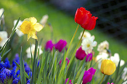

Spring Page
 I would have to say that Spring is my second favorite season because that is when everything comes to life. Spring is super pretty and has a lot of things to offer. Animals of all shapes and sizes come out and thats when all the little baby animals come out and are super cute. Spring also brings nice weather that seems even nicer because you are just getting out of the coldest time of the year